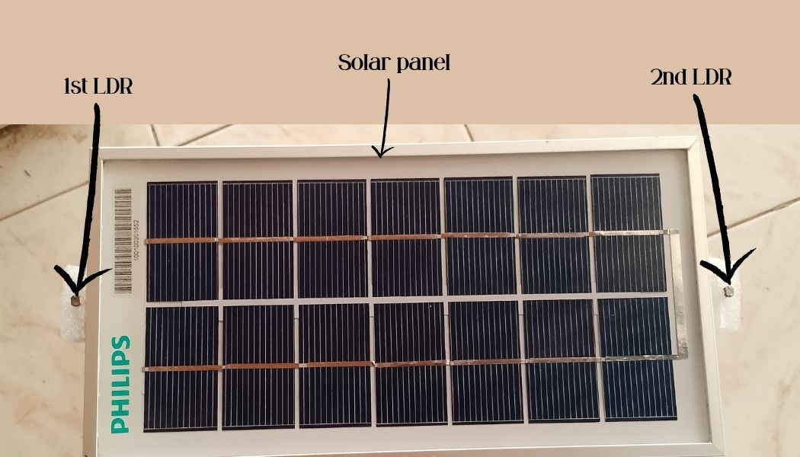
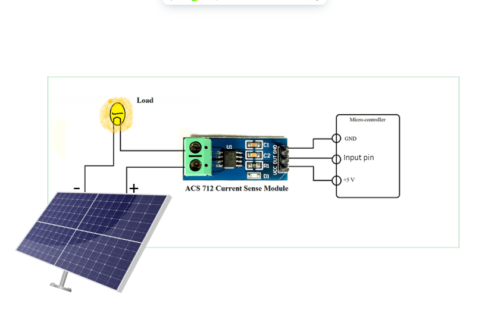
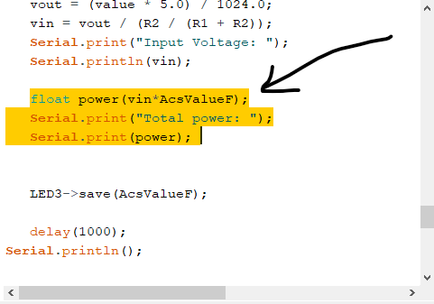
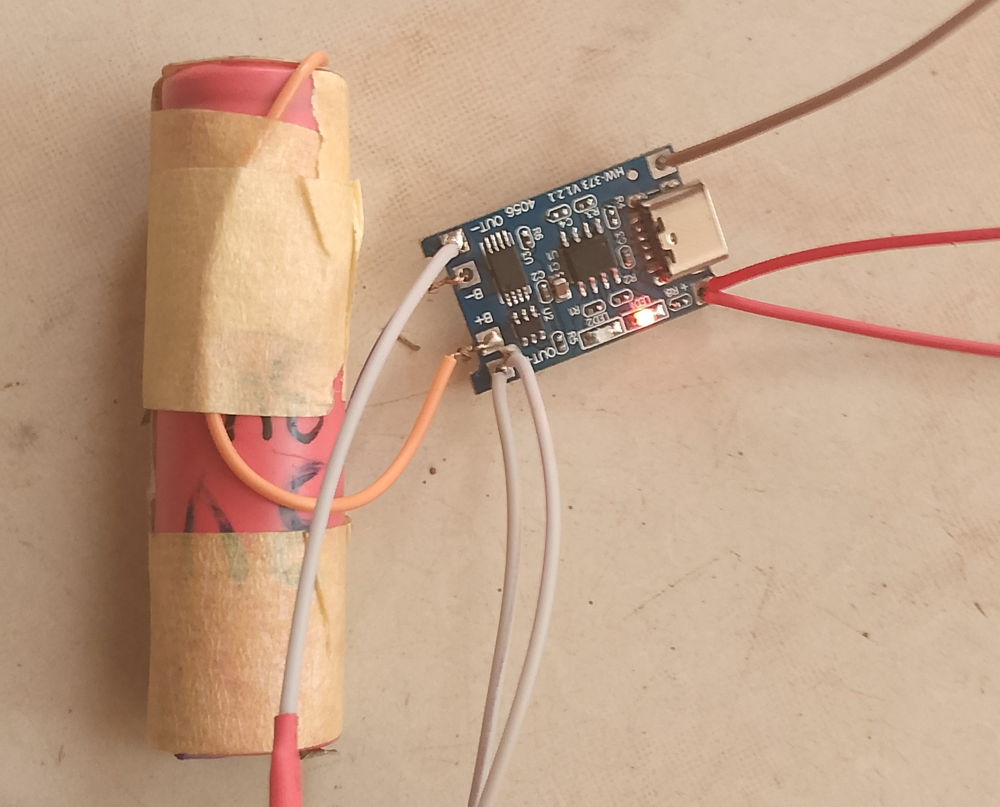
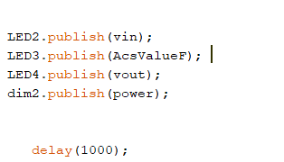
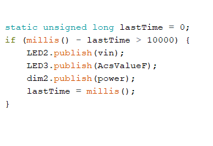
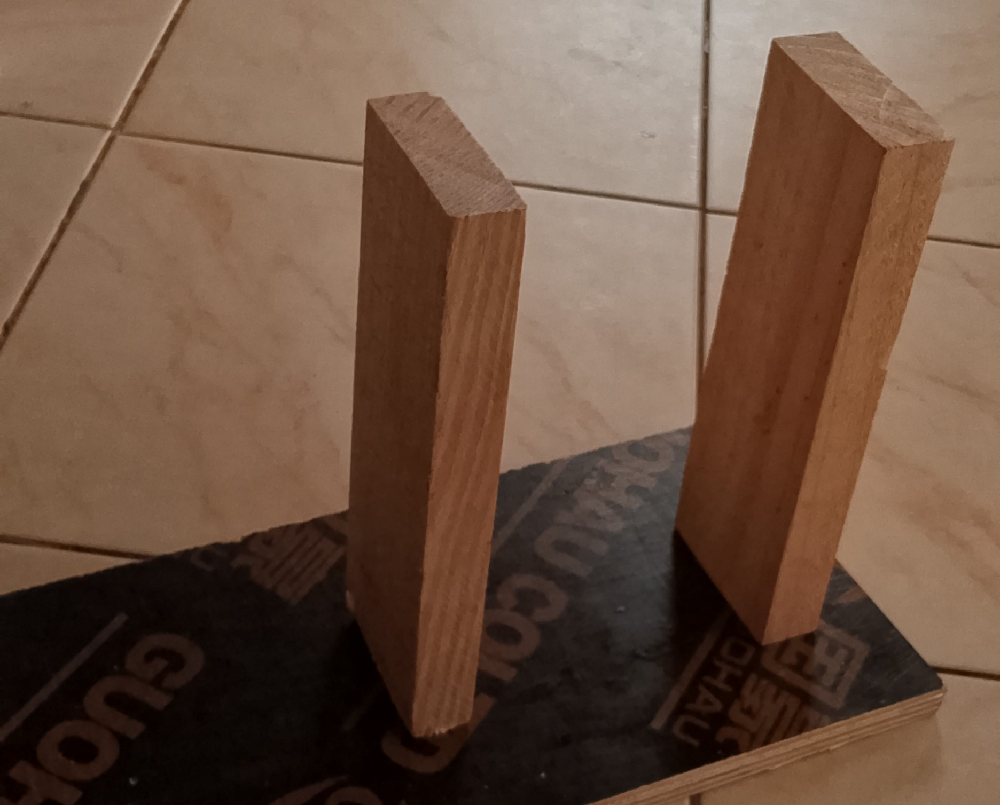
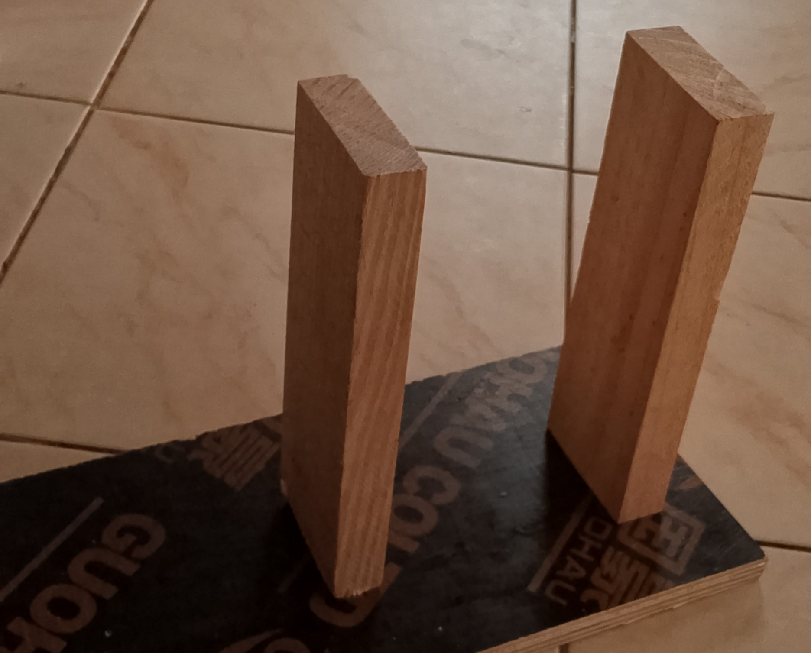

PROJECT INTRODUCTION
Abstract
This project is about maximizing the solar energy output. This is the simple solar panel but with exception of tracking the sun from when the sun rises until it sets. Compared to the other usual solar panels, it increases the
Imprementation
Working principle:
How it works : This solar panel will track the
This project have different parts.
>Solar tracking system
>Current measuring
>voltage measuring
>Power measuring
>Battery percentage
>Publishing value
>Hardware & Mounting
Part 1: Solar tracking system
We made this system using:
> Two Light Dependent Resistors(LDRs),
> One Servo motor
> ESP32
> Two 220 ohms resistors
We started by connecting the LDRs with resistors to create the analog input to be measured by using the voltage divider rule. This helps to measure the amount of resistance using the analog or input arduino pins.

Here is how the solar panel looks with the LDRs

Part 2: Current measuring
Here we used Current sensor to measure the current being drawn by the Solar panel.
The solar panel anode(+) passed through current IN terminal and comes out from
current OUT terminal.

After that, it goes to the load, but cathode(-) goes direct to the load from the solar panel.

Then, to measure the current we connect positive(+) and negative(-) to the sensor
and the signal pin goes to the input pin of a micro controler

After all of these, We assembled them in proteus to ensure its functionality.
But we used arduino uno because
it is hard to use ESP32 in proteus. We also used battery in place of solar panel as power source

Part 3: Voltage measuring
Here we used voltage devider to reduce the voltage so that the micro controler can handle it.

And after we used calculations to re-write it as the real value.

Part 4: Power measuring
Here, we used the simple formula to calculate the Output power
coming out of the solar panel.
We multiplied CURRENT Value
being obtained to the VOLTAGE value being obtained

Part 5: Battery percentage
Here, we will use the voltage divider law as we sed it on voltage calculation.
We will take the positive and negative from the battery and direct it to a voltage divider
in order to let the micro-controller handle that voltage easily and then the output will
connected to the input pin to measure it and then display it on the adafruit dashboard.

Part 6: Publishing value
We tried to publish the values we gained in the hardware components, started by publishing the
voltage using the delay function and we discovered that we non updated voltage on dashboard due
to the delay function.

After that we decided to use the "Millis function" in order to don't block the functionality of the
other codes, it really worked well

And the dashboard kept updating every 10s it looked like this:

Part 7: Hardware & Mounting
We designed two wooden stick to hold our solar panel during the rotation.

We found that we can easily rotate and hold the panel with the help of bearings, because
the servo motor can hold the solar panel it's self.
 

We also attached the printed plastics on the solar panel in order to connect it to the bearings.
And the overall holding system looked like this.

overall codes will be looking like this
#include <WiFi.h>
#include <WiFiClient.h>
#include <ESP32Servo.h>
#include "Adafruit_MQTT.h"
#include "Adafruit_MQTT_Client.h"
//Power codes declaration
const int voltagePin = 33;
float R1 = 10000.0;
float R2 = 10000.0;
int CurrentPin=35;
Servo myservo;
int LDR1= 32;
int LDR2= 34;
int Spoint = 90;
#define WLAN_SSID "mufasa1"
#define WLAN_PASS "######"
#define AIO_SERVER "io.adafruit.com"
#define AIO_SERVERPORT 1883
#define IO_USERNAME "#######"
#define IO_KEY "#################"
WiFiClient client;
Adafruit_MQTT_Client mqtt(&client, AIO_SERVER, AIO_SERVERPORT, IO_USERNAME, IO_KEY);
Adafruit_MQTT_Subscribe Sys_switch = Adafruit_MQTT_Subscribe(&mqtt, IO_USERNAME "/feeds/LED1");
Adafruit_MQTT_Publish LED2= Adafruit_MQTT_Publish(&mqtt, IO_USERNAME "/feeds/LED2");
Adafruit_MQTT_Publish LED3 = Adafruit_MQTT_Publish(&mqtt, IO_USERNAME "/feeds/LED3");
Adafruit_MQTT_Publish LED4 = Adafruit_MQTT_Publish(&mqtt, IO_USERNAME "/feeds/LED4");
Adafruit_MQTT_Publish dim2= Adafruit_MQTT_Publish(&mqtt, IO_USERNAME "/feeds/dim2");
void MQTT_connect();
void setup() {
Serial.begin(115200);
myservo.attach(14);
myservo.write(Spoint);
delay(1000);
Serial.println(F("Adafruit MQTT password "));
Serial.print("Connecting to ");
Serial.println(WLAN_SSID);
WiFi.begin(WLAN_SSID, WLAN_PASS);
while (WiFi.status() != WL_CONNECTED) {
delay(500);
Serial.print(".");
}
Serial.println("\nWiFi connected");
Serial.print("IP address: ");
Serial.println(WiFi.localIP());
}
void loop() {
MQTT_connect();
int ldr1 = analogRead(LDR1);
int ldr2 = analogRead(LDR2);
ldr2=ldr2+550;
int Value1 = abs(ldr1-ldr2);
int Value2 = abs(ldr2-ldr1);
if((Value1<1)||(Value2<1)){
}
else{
if (ldr1>ldr2){
Spoint=--Spoint;
}
if (ldr1<ldr2){
Spoint=++Spoint;
}
Spoint = constrain(Spoint, 0, 180);
}
myservo.write(Spoint);
delay(300);
Serial.println(ldr1);
Serial.println(ldr2);
Serial.print("Degrees");
Serial.println(Spoint);
//The power codes
unsigned int x=0;
float AcsValue=analogRead(CurrentPin);
float RealCurrent = map (AcsValue,1550,3550,-20,20);
delay (3);
Serial.print("The current is: ");
Serial.println(RealCurrent);
float value = analogRead(voltagePin);
float vout = (value * 3.3) / 4095.0;
float vin = vout / (R2 / (R1 + R2));
Serial.print("Input Voltage: ");
Serial.println(vin);
float power=vin * RealCurrent;
Serial.print("Total power: ");
Serial.print(power);
Serial.println(".");
static unsigned long lastTime = 0;
if (millis() - lastTime > 7000) {
LED2.publish(vin);
LED3.publish(RealCurrent);
dim2.publish(power);
lastTime = millis();
}
}
void MQTT_connect() {
int8_t ret;
if (mqtt.connected()) {
return;
}
Serial.print("Connecting to MQTT... ");
uint8_t retries = 3;
while ((ret = mqtt.connect()) != 0) {
Serial.println(mqtt.connectErrorString(ret));
Serial.println("Retrying MQTT connection in 5 seconds...");
mqtt.disconnect();
delay(1000);
retries--;
if (retries == 0) {
while (1);
}
}
Serial.println("MQTT Connected!");
}